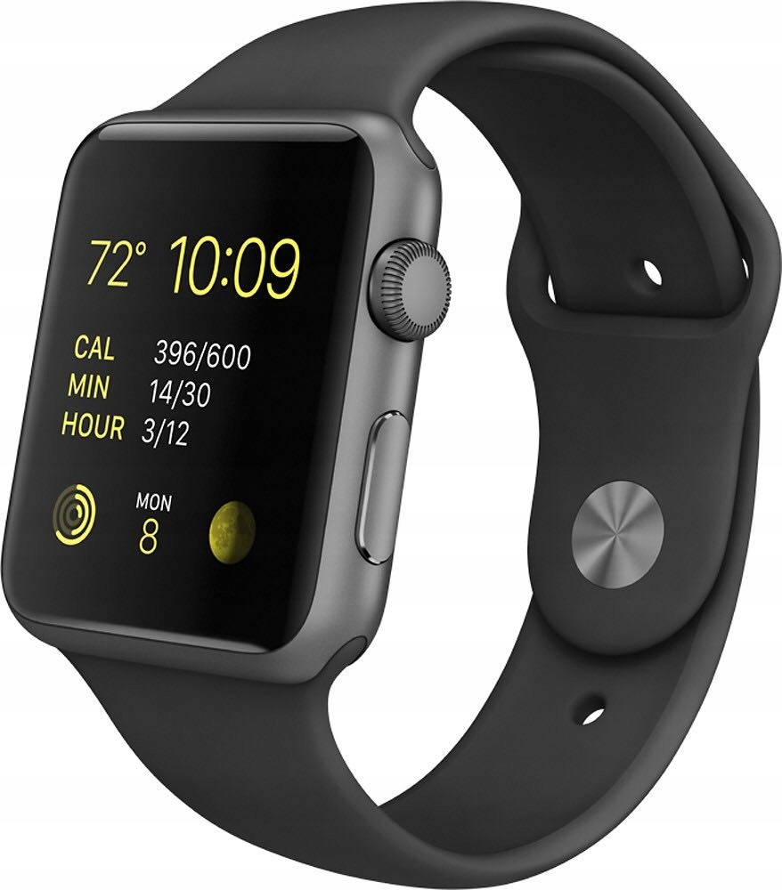

Apple Watch Series 0

Apple Watch Series 0 to pierwsza generacja inteligentnych zegarków firmy Apple. Została wydana we wrześniu 2015 roku i działa na systemie operacyjnym watchOS 1.0. Zegarek oferuje wiele funkcji, takich jak monitorowanie aktywności fizycznej, odtwarzanie muzyki, powiadomienia z telefonu, a także możliwość wykonywania połączeń i wysyłania wiadomości tekstowych.
Powrót